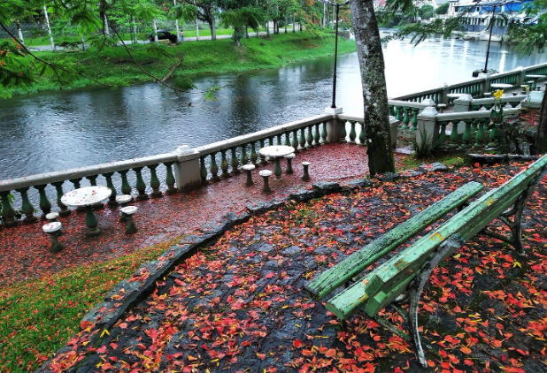
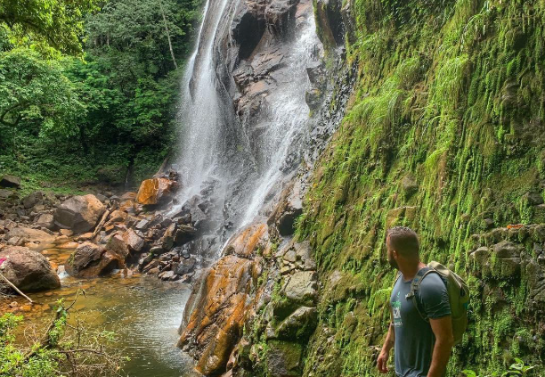
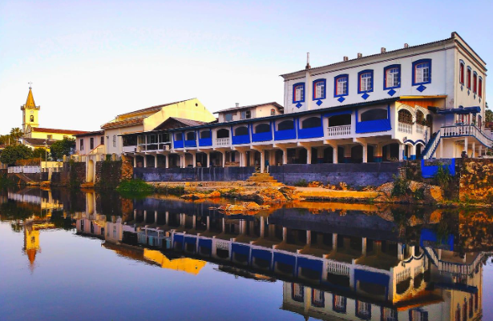
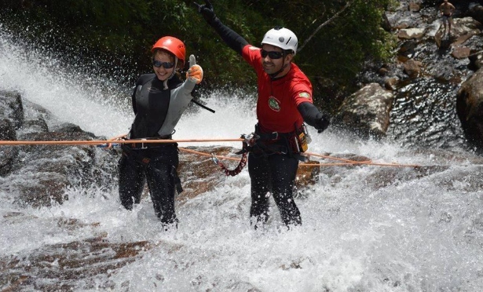

Detalhes do Roteiro
Início Sobre Nós Serviços Pacotes Atividades Contato Morretes Aventura Venha Conhecer Pacote Morretes Aventura
Esse pacote é ideal para quem busca aventura e contato com a natureza, além de desfrutar das belezas que Morretes tem a oferecer.
Saindo de Curitiba teremos diversas atrações e atividade nesse pacote como:
Salto Bom Jardim – que é uma encantadora cachoeira localizada em Morretes, ideal para quem busca contato com a natureza em meio à Mata Atlântica. Com duas quedas d'água e piscinas naturais, é um destino perfeito para banho e relaxamento.
Ponta da Pita – que é uma formação rochosa localizada na Baía de Antonina, no litoral do Paraná. Seu nome deriva de uma planta típica da região, utilizada pelos pescadores para confeccionar bóias para suas redes. Este local oferece uma vista panorâmica deslumbrante, onde as águas do Oceano Atlântico encontram as encostas da Serra do Mar. É um destino popular para atividades como pesca, caminhadas e piqueniques, além de ser um excelente ponto para apreciar o pôr do sol.
Salto Alto do Sagrado – que é uma formação rochosa localizada na região de Morretes, conhecido por suas cachoeiras e trilhas, o local oferece uma experiência imersiva na natureza da Serra do Mar.
Cachoeirismo (ou rapel em cachoeira) é uma daquelas experiências que marcam profundamente, uma mistura de adrenalina, conexão com a natureza e superação pessoal.
City tour por Morretes e Antonina – você terá uma excelente forma de explorar o litoral histórico do Paraná, combinando cultura, gastronomia e paisagens deslumbrantes.
Translado privativo in/out, saindo de Curitiba 1 noite de hospedagem no centro de Morretes, com um delicioso café da manhã Translado operacional em todos os passeios City tour em Morretes e Antonina 1 almoço as margens do Rio Nhundiaquara;(típico barreado e frutos do mar) Guia local credenciado Instrutores especializados em técnicas verticais Todos equipamentos necessários para realizar a atividade Trekking Salto Bom Jardim Taxa de permanência na reserva Seguro atividades Fotos e filmagens Informações adicionais: Duração: 02 dias;Atividades de aventura: Caminhada, escalaminhada, cascading;Dificuldade: Leve/Moderada; Limite de idade: Mínimo 6 anos, não tem limite máximo;Condicionamento físico: Normal;Atrativos naturais: Mata Atlântica, Cachoeira, Montanhas, trilhas.
Galeria de Fotos



